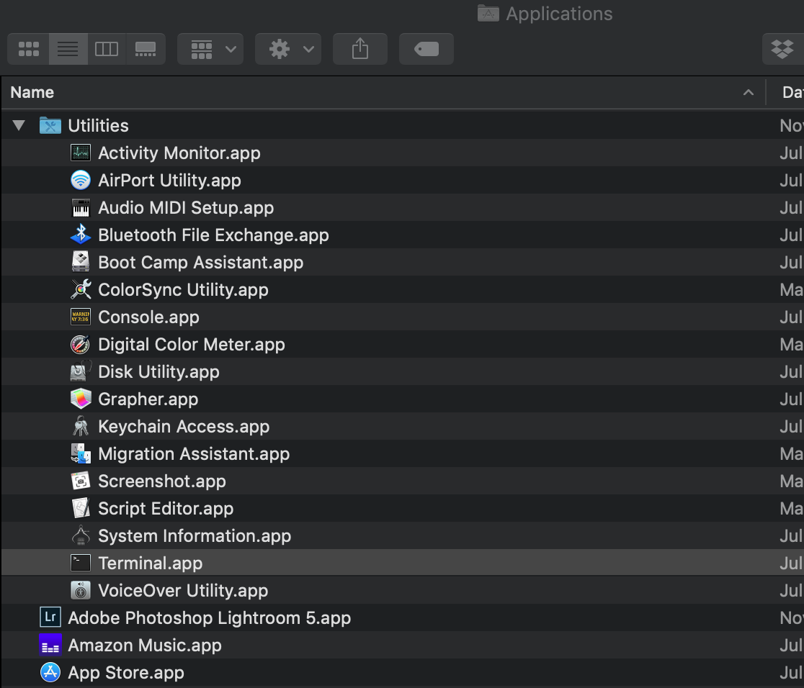

Getting installed and ready¶
How to open your operating system’s shell/Terminal¶
This section covers just how to find and open your operating system’s command-line interface, also referred to as Terminal on macOS, or PowerShell/cmd.exe for Windows; or, more generally: the shell
Note
Note: In subsequent sections, I’ll just use “shell” to refer to your system’s command-line interface, whether you’re using, whether it’s Windows Powershell or macOS Terminal. Technically “shell” is not the exact nomenclature either (you might hear others talk about “bash” or “zsh”) but it’s good enough for now.
macOS Terminal¶
Note
Note: Unfortunately, as a macOS user, you will need to use Terminal in order to install youtube-dl on macOS, which is why this section is before the how-to-install-youtube-dl…
If you know no other way to operate your computer other than how to
point-and-click (which is a lot, mind you), the simplest way to find
and open Terminal is to go into Spotlight (the system search
bar) and type Terminal.app:

Alternatively, open up Finder and click-navigate to your Applications folder, then to its subfolder, Utilities:
Clicking on Terminal.app should pop open an application window that looks similar to what I have (but not exactly, since I’ve customized how Terminal looks, including the emoji in my prompt):

If you’ve never run a Terminal command before, now’s your chance: type
pwd and hit Enter:
pwd – short for ‘print working directory’, is a command that simply prints to screen the name of “where you are” in your filesystem. By default, you should be at what’s called your home directory.
What/where is “here”, or the “home directory” exactly? You can find out
by executing a command named open followed by a whitespace
(i.e. hitting Spacebar), and then an argument (“argument” is the
word used to describe a value/thing you want the command to operate on).
In this example, the argument is a single dot/period, which is shorthand for “this directory”
open .
Typing the full name of your current working directory (i.e. what
pwd produced, which was /Users/dan for me) would also work:
open /Users/dan
Either way, you should see a good ol Finder window pop open, showing
you the list of files and folders in your home directory – you’re
probably at least familiar with Desktop, Downloads, and
Documents:
And that’s about all we need to know for now when it comes to using Terminal, i.e. your macOS shell
Windows PowerShell¶
I didn’t have the time to boot into Windows 10 and take screenshots. The
best help I can give at this moment is: to open the PowerShell command
line, go to the Windows Start Menu search bar and type powershell
Here’s a pretty good walkthrough (though it gets into technical terms a little too soon for my liking): Guru99: Powershell Tutorial for Beginners: Learn in 1 Day
Installing youtube-dl¶
The official download and installation instructions can be found on the youtube-dl official site
Unfortunately, the installation process for both Windows and macOS is not a simple click-and-install process, and may be downright confusing and intimidating if you’ve never used used the command-line. I apologize in advance if these brief instructions don’t get you anywhere; hopefully it’s some small comfort to know that the installation process is often the most difficult and confusing part of learning new tools
Installing youtube-dl if you have Python installed¶
If you already have Python installed (macOS/Windows/Linux)
If you’ve been using macOS before 10.15 i.e. Catalina, your system should already have Python installed. Otherwise, you might have Python installed for some other reason, such as being a dependency for some other thing you’ve installed, or maybe you’ve tried learning to code.
In any case, the easiest way to find out is to open your system shell
and execute the command, python --version, which should print out
something like Python 2.7.17:
If that’s the case, then installing youtube-dl should be as easy as running this command:
sudo pip install --upgrade youtube-dl
Note
Note: The sudo command will probably prompt you for your password
– this is the password you use to log into your computer
And if the pip install command works, you’ll get output that looks
like this, likely with warnings that (hopefully) you can ignore:

And if that seemed to work, skip ahead to the section titled, “Testing if youtube-dl is installed and working” TKref
How to install Python on your system if you don’t already have it¶
Note
Note: obviously skip this section if you already have Python installed.
Installing youtube-dl on macOS/Linux using homebrew¶
If the python i.e. pip install method didn’t work and you’re on
macOS (or Linux apparently, I haven’t tried it out), then maybe the
more reliable (and common) way to install youtube-dl is by installing
another program called homebrew.
homebrew is a command-line package manager, i.e. a shell program that manages the installation of other programs, and you can find the installation on Homebrew’s homepage: https://brew.sh/
As of July 2020, the copy-paste one-liner to execute in your shell is:
/bin/bash -c "$(curl -fsSL https://raw.githubusercontent.com/Homebrew/install/master/install.sh)"
Note: normally, you should not be copy-pasting commands that you totally do not understand, like the one above. Please check the Homebrew homepage yourself to see what it says – the command may have changed since I posted it here; also, the homepage gives some description about what’s happening…
If that worked, then installing youtube-dl should be as easy as this command:
brew install youtube-dl
You’ll hopefully get output that looks like this:

TKTKTK
Testing if youtube-dl is installed and working¶
The easiest way to tell if youtube-dl is installed and working is to
run it with a version check, i.e.
youtube-dl --version